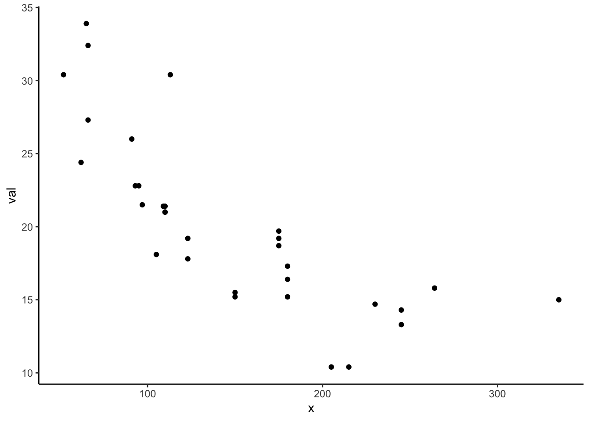
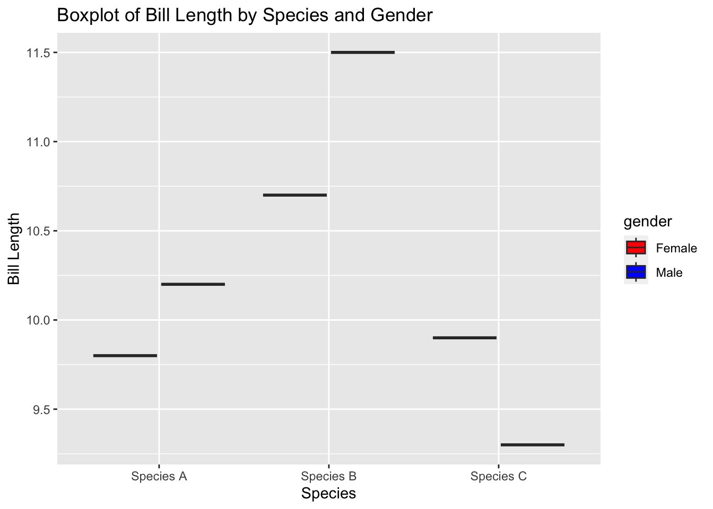
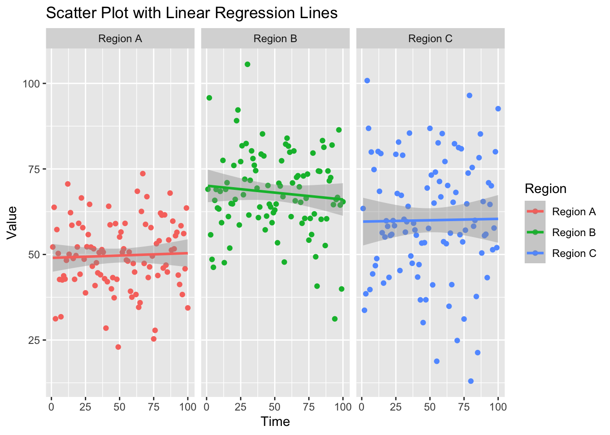
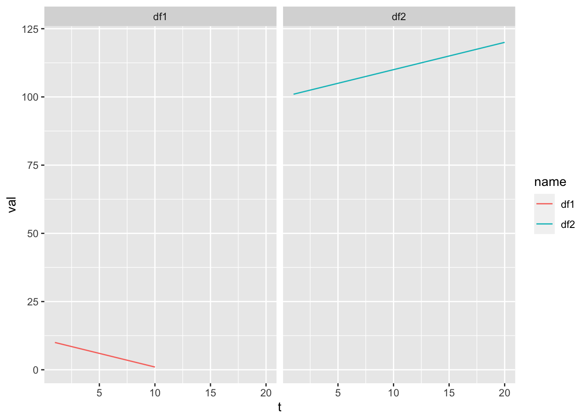
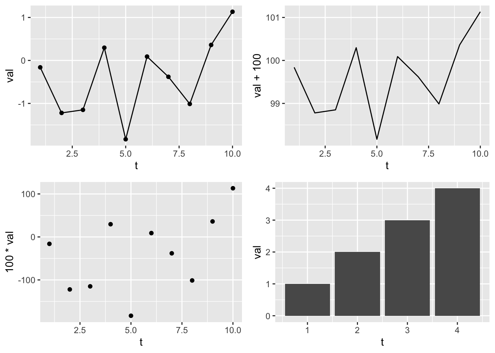
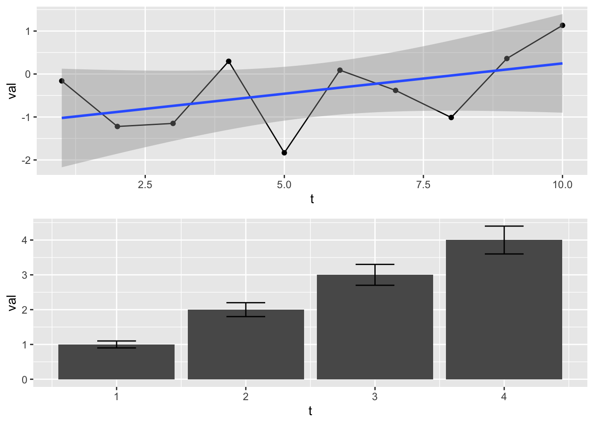

library(ggplot2)R - ggplot2
This tutorial will give an introduction to plotting with the ggplot2 package, which is the modern way to make general plots with R. I will talk tomorrow about plots of spatial data.
This is oriented to those with little or no experience using ggplot2 or those who have tried it and gotten frustrated. The goal is to get you started. Once you have the basics, there are a many many ggplot tutorials online – though personally the basics are all I need.
The goal is to give you enough of an understanding of ggplot2 so that you can create prompts for ChatGPT. You need to know the basics of ggplot2 to understand ChatGPT’s code and know what sort of things to ask ChatGPT. But if you are lost, you can always tell it what you want and ask it to ask you questions.
Load the library
Basic x versus y plot
Workflow
Let’s say you wanted to make a simple x versus y plot. Here’s your ggplot() workflow.
- Decide on
x. - Decide on
y. - Make a data frame with
xandy. - Create the plot object with a call to
ggplot()to tell it the data frame and then what thexandyto use:aes(x=..., y=...). - Add points or lines to the plot with
geom_line()orgeom_point().
Create data frame
val <- mtcars$mpg
x <- mtcars$hp
df <- data.frame(x=x, val=val)ggplot call
p1 <- ggplot(df, aes(x=x, y=val)) +
geom_point() # plot a line
p1 # plot it
p1 is a ggplot object.
class(p1)[1] "gg" "ggplot"We can add elements to a ggplot object
p1 + geom_line()
Changing the whole look
ggplot uses themes to set the look of your plot and you can change the whole look by setting a different theme. You can also just tweak one element of the plot’s existing theme. Note because we fixed the line and point colors, we override some theme elements (eg, line colors). See ?theme_bw to see all the themes. See ?theme to learn how to change one element of your plot design.
p1 + theme_classic()
Using ChatGPT
Boxplots
Now that you see the basic structure of a simple x versus y plot, let’s use ChatGPT to help us make plots.
This what ChatGPT gave me. Try using this prompt and adding more info until you get a plot you like.
# Load the ggplot2 library
library(ggplot2)
# Sample data frame (replace with your actual data)
data <- data.frame(
species = c("Species A", "Species A", "Species B", "Species B", "Species C", "Species C"),
gender = c("Male", "Female", "Male", "Female", "Male", "Female"),
bill_length = c(10.2, 9.8, 11.5, 10.7, 9.3, 9.9)
)
# Create the side-by-side boxplot
ggplot(data, aes(x = species, y = bill_length, fill = gender)) +
geom_boxplot(position = position_dodge(width = 0.8)) +
labs(title = "Boxplot of Bill Length by Species and Gender",
x = "Species",
y = "Bill Length") +
scale_fill_manual(values = c("Male" = "blue", "Female" = "red"))
Adding trends
ChatGPT gives:
# Load the required libraries
library(ggplot2)
library(dplyr)
# Create a sample data frame
df <- data.frame(
Region = rep(c("Region A", "Region B", "Region C"), each = 100),
Time = rep(seq(1, 100), times = 3),
Value = c(rnorm(100, mean = 50, sd = 10),
rnorm(100, mean = 70, sd = 12),
rnorm(100, mean = 60, sd = 15))
)
# Create the scatter plot with separate panels for each region
ggplot(df, aes(x = Time, y = Value, color = Region)) +
geom_point() +
geom_smooth(method = "lm") +
labs(title = "Scatter Plot with Linear Regression Lines",
x = "Time",
y = "Value") +
facet_wrap(~Region)
Giving your data to ChatGPT
You can paste in the top of your data (if it is csv) and ChatGPT can figure out the structure. Then you can say what you want to do with this data.
Demo
Arranging plots into grids
Dynamically
ggplot() will dynamically break your data into plots for you using facet_wrap().
df1 <- data.frame(t=1:10, val=10:1, name="df1")
df2 <- data.frame(t=1:20, val=1:20+100, name="df2")
df <- rbind(df1, df2)
p1 <- ggplot(df, aes(x=t, y=val, col=name)) +
geom_line() +
facet_wrap(~name)
p1
We can “free” the scales.
p1 + facet_wrap(~name, scales="free")
Manually
We can arrange plots into a grid manually with gridExtra::grid.arrange() (from the gridExtra package).
library(gridExtra)
df <- data.frame(t = 1:10, val = rnorm(10))
p1 <- ggplot(df, aes(x=t, y=val)) + geom_line() + geom_point()
p2 <- ggplot(df, aes(x=t, y=val+100)) + geom_line()
p3 <- ggplot(df, aes(x=t, y=100*val)) + geom_point()
df2 <- data.frame(t = 1:4, val = 1:4, se=.1*(1:4))
p4 <- ggplot(df2, aes(x=t, y=val)) + geom_col()
gridExtra::grid.arrange(p1, p2, p3, p4)
Instead of gridExtra and grid.arrange(), check out the patchwork package. It does similar jobs as grid.arrange() but is better.
Let’s do two plots in one column but add new info to plot 1.
gridExtra::grid.arrange(p1+geom_smooth(method="lm"),
p4+geom_errorbar(aes(ymin=val-se, ymax=val+se), width=0.3), ncol=1)`geom_smooth()` using formula = 'y ~ x'
Getting your data in the right format
You need your data in long format.
Let’s say you had temperature data for 3 rivers. It would be common to have your data like this. This is wide format.
Date, River1, River2, River3
1, 45, 35, 20
2, 25, 30, 21You need to get this in long format like so.
Date, River, Temperature
1, River1, 45
1, River2, 35
1. River3, 20
2, River1, 25
2, River2, 30
2, River3, 21You do this with code not manually! This is hard to remember how to do, so just ask ChatGPT. Pass the data into ChatGPT and ask it how to put it in long format.
# Your data as a text string
data_string <- "Date, River1, River2, River3
1, 45, 35, 20
2, 25, 30, 21"
# Use read.table() to read the data from the text string
df <- read.table(text = data_string, header = TRUE, sep = ",")
# Print the resulting data frame
print(df) Date River1 River2 River3
1 1 45 35 20
2 2 25 30 21library(tidyr)
df_long <- gather(df, key = "River", value = "Value", -Date)
df_long Date River Value
1 1 River1 45
2 2 River1 25
3 1 River2 35
4 2 River2 30
5 1 River3 20
6 2 River3 21Creating plot templates
If you are creating plots with the same features over and over, you can hold the features in a list and add that on to your plot.
Example where I want all my plots to have red points and a regression line:
p3 <- geom_point(col="red")
p2 <- geom_smooth(method="lm")
p4 <- xlab("MPG")
p5 <- ylab("HP")
# pt is my template
pt <- list(p2, p3, p4, p5)
p1 <- ggplot(mtcars, aes(x=mpg, y=hp)) + pt
p2 <- ggplot(mpg, aes(x=hwy,y=cyl)) + pt
grid.arrange(p1, p2)
Summary
ggplot is very powerful and will make your plotting workflow more efficient and much much faster. It takes a little while to get the hang of, but you do not need to be a ggplot wizard. Just the basics here will take you a long way. ChatGPT knows ggplot2 and will help you.
A good set of basic ggplot commands when you are starting:
ggplotgeom_line()geom_point()geom_col()ggtitle(),xlab(),ylab(),xlim(),ylim()- Themes. Use
?theme_bwto see them. gridExtra::grid.arrange(..., nrow, ncol)facet_wrap()- Changing the color, line, and points manually is a bit painful, but often unavoidable. Get to know the
scale_xyz_manual()functions when you need to do that.?scale_color_manualto find them all.
If you want to see some examples of what ggplot2 can do, look at some galleries. Knowing what ggplot2 can do will give you ideas for what you can ask ChatGPT to create for you.
- https://r-graph-gallery.com/ggplot2-package.html
- http://r-statistics.co/Top50-Ggplot2-Visualizations-MasterList-R-Code.html
There are also many tutorials on ggplot2